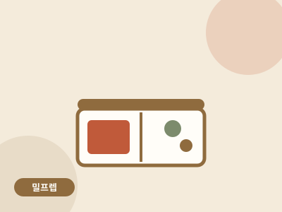

밀프렙 · 40분 · 난이도 중
데리야끼 치킨 밀프렙 4일치
일요일 40분 투자로 평일 저녁 4일이 해결되는 원룸쿡식 밀프렙.

- 조리 시간
- 40분
- 난이도
- 중
- 분량
- 4끼 분량
- 필요 화구
- 1구 인덕션
만드는 법
- 브로콜리 먼저 데치기화구가 하나라서 순서가 중요합니다. 냄비 대신 프라이팬에 물을 2cm 붓고 브로콜리를 3분 쪄냅니다. 팬을 씻지 말고 물만 버리세요. 다음 단계에서 그대로 씁니다.
- 닭다리살 굽기같은 팬의 물기를 닦고 닭다리살을 껍질부터 중불에 굽습니다. 한 면당 5분, 기름은 두르지 않아도 껍질 기름이 나옵니다.
- 데리야끼 소스간장·맛술·설탕·마늘을 섞어 부은 뒤 약불에서 5분 졸입니다. 소스가 끈적하게 닭에 붙으면 완성입니다.
- 4등분 소분밥 → 브로콜리 → 데리야끼 치킨 순으로 용기 4개에 나눠 담습니다. 밥과 반찬이 닿는 면을 최소화하면 데웠을 때 식감이 살아 있습니다.
- 보관과 데우기냉장 3일 + 냉동 1개(목요일분). 먹기 전 전자레인지 700W 2분 30초. 냉동분은 전날 밤 냉장으로 옮겨두세요.
원룸쿡의 한 끗
닭가슴살이 아닌 닭다리살을 쓰는 이유: 냉장 보관 후 재가열해도 퍽퍽해지지 않습니다. 밀프렙은 '만든 날 맛'이 아니라 '3일째 맛'으로 설계해야 합니다.
닭가슴살이 아닌 닭다리살을 쓰는 이유: 냉장 보관 후 재가열해도 퍽퍽해지지 않습니다. 밀프렙은 '만든 날 맛'이 아니라 '3일째 맛'으로 설계해야 합니다.